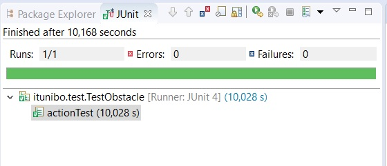

Requirements
Nello
SPRINT2 sono stati implementati i seguenti punti:
- Implementazione delle azioni prepare, addFood, clean.
- Implementazione del'attore planningRoute
Requirement analysis
Da requisito fornito dal committente, le azioni devono essere eseguite in un preciso ordine: una prepare, zero o più addFood ed una clear.
Questo requisito è già stato soddisfatto in fase di analisi, in quanto l'ordine delle transizioni tra gli stati dell'automa butlerMind
soddisfa il requisito.
Problem analysis
Per implementare le tre azioni, è necessario conoscere in ogni istante la posizione del Butler, per capire con quale attore dovrà interagire.
Per fare ciò, in execRoute ogni volta che viene eseguita una mossa, viene comunicato al butlerresourcemodel che la posizione corrente del Butler è cambiata.
Inoltre una volta che execRoute ha eseguito tutte le mosse, quindi ha raggiunto la destinazione richiesta da ButlerMind, invia un dispatch destinationReached(X,Y) a ButlerMind,
in quale in base alle coordinate contenute nel payload è in grado di determinare vicino a quale device si trova il Butler.
Da questa analisi, nasce la necessità di tenere traccia di vari aspetti:
- Le posizioni "vicine" ai vari device con la relativa direzione. Se ad esempio la Pantry si trova in posizione (3,0),
la posizione "vicina" è (2,0, dirSud).
- Tenere traccia della posizione corrente del Butler.
- Caricare la mappa della stanza, se presente, in planningRoute altrimenti avviare explorationRoom
Per risolvere il primo punto prevedo una base di conoscenza per l'attore butlerMind
butlerMindKB.pl, in cui verranno salvate le posizioni
vicine. Per quanto riguarda le posizioni vicine al tavolo, essende inizialmente in una posizione sconosciuta, devono essere calcolate non appena termina
l'esplorazione della stanza. Per questo ho sviluppato un file Prolog
nearTable.pl in cui vi sono delle regole che, a partire dalla posizione del tavolo
ritornano tutte le celle adiacenti con relativa direzione. In questo file sono anche presenti le regole per calcolare, a partire dalla posizione corrente,
la cella adiacente al tavolo più vicina al Butler.
All'avvio del sistema nell'attore planningRoute viene inizializzato il planner e subito dopo si verifica la presenza della mappa. Se la mappa è disponibile
viene caricata nel planner, altrimenti viene inviato il dispatch explore ad explorationRoom. Una volta che explorationRoom termina l'esplorazione
comunica la mappa al planningRoute sotto forma di stringa.
Project
In questo Sprint è stato implementato il codice dell'attore PlanningRoute,i vari stati di butlerMind in cui vengono eseguite le azioni
e le basi di conscenza con le informazioni sulle posizioni raggiungibili dal Butler.
Non riporto gli automi degli attori in quanto sono gli stessi dello sprint precedente. Riporto nella relazione il codice scritto per
implementare le azioni e planningRoute.
ButlerMind - Prepare
State preparing{
println("---BUTLERMIND in preparing")
["Task = \"preparing\";"]
forward planningroute -m calculateRoute : calculateRoute(pantry)
["position = \"pantry\""]
}Transition t0 whenMsg destinationReached -> actionPrepare
State actionPrepare{
println("###BUTLERMIND in actionPrepare")
onMsg(destinationReached : destinationReached(X,Y)){
solve(getPosition($payloadArg(0),$payloadArg(1), POSITION))
["position = getCurSol(\"POSITION\").toString()"]
println(position)
}
if"position == \"pantry\""{
//prendo i piatti
forward planningroute -m calculateRoute : calculateRoute(table)
}else{
if"position == \"table\" && table == 0"{
//poso i piatti sul tavolo
forward planningroute -m calculateRoute : calculateRoute(fridge)
["table++"]
}else{
if"position == \"fridge\""{
//prenod il cibo dal frigo
forward planningroute -m calculateRoute : calculateRoute(table)
}else{
if"position == \"table\" && table == 1"{
//poso il cibo sul tavolo
forward planningroute -m calculateRoute : calculateRoute(rh)
["table = 0"]
}else{
if"position == \"rh\""{
forward maitre -m completedTask : completedTask($Task)
forward butlermind -m completedTask : completedTask
}
}
}
}
}
}Transition t0 whenMsg destinationReached -> actionPrepare
whenMsg completedTask -> waitCmd2
ButlerMind - addFood
State adding{
["Task = \"adding\"
inRh = false"]
onMsg(addFood : addFood(C,Q)){
forward fridge -m foodAvailability : foodAvailability($payloadArg(0),$payloadArg(1))
}
}Transition t0 whenMsg positiveResponse -> nextStep
whenMsg negativeResponse -> sendWarning
State nextStep{
forward planningroute -m calculateRoute : calculateRoute(fridge)
}Transition t0 whenMsg destinationReached -> actionAdd
State actionAdd{
println("###BUTLERMIND in actionPrepare")
onMsg(destinationReached : destinationReached(X,Y)){
solve(getPosition($payloadArg(0),$payloadArg(1), POSITION))
["position = getCurSol(\"POSITION\").toString()"]
println(position)
}
if"position == \"table\""{
//prendo il cibo dal tavolo
forward planningroute -m calculateRoute : calculateRoute(table)
}
if"position == \"fridge\""{
//poso il cibo nel frigo
forward planningroute -m calculateRoute : calculateRoute(table)
}
if"position == \"rh\""{
forward butlermind -m completedTask : completedTask()
}
}Transition t0 whenMsg destinationReached -> actionClean
whenMsg completedTask -> waitCmd2
State sendWarning{
onMsg(negativeResponse : negativeResponse(C,Q,AQ)){
forward maitre -m warning : warning($payloadArg(0),$payloadArg(1),$payloadArg(2))
}
}Goto waitCmd2
ButlerMind -clear
State cleaning{
["Task = \"cleaning\";"]
forward planningroute -m calculateRoute : calculateRoute(table)
["position = \"table\""]
}Transition t0 whenMsg destinationReached -> actionClean
State actionClean{
println("###BUTLERMIND in actionCleaning")
onMsg(destinationReached : destinationReached(X,Y)){
solve(getPosition($payloadArg(0),$payloadArg(1), POSITION))
["position = getCurSol(\"POSITION\").toString()"]
println(position)
}
if"position == \"dishwasher\""{
//poso i piatti nella dishwasher
forward planningroute -m calculateRoute : calculateRoute(rh)
}else{
if"position == \"table\" && table == 0"{
//prendo il cibo dal tavolo
forward planningroute -m calculateRoute : calculateRoute(fridge)
["table++"]
}else{
if"position == \"fridge\""{
//poso il cibo nel frigo
forward planningroute -m calculateRoute : calculateRoute(table)
}else{
if"position == \"table\" && table == 1"{
//prendo i piatti dal tavolo
forward planningroute -m calculateRoute : calculateRoute(dishwasher)
["table = 0"]
}else{
if"position == \"rh\""{
forward maitre -m completedTask : completedTask($Task)
forward butlermind -m completedTask : completedTask
}
}
}
}
}
}Transition t0 whenMsg destinationReached -> actionClean
whenMsg completedTask -> waitCmd1
PlanningRoute
QActor planningroute context ctxButler {
["var set = false
var mapEmpty = true"]
State s0 initial{
println("###PLANNINGROUTE STARTED")
solve(consult("sysRules.pl"))
solve(consult("planningRouteKB.pl"))
solve(consult("nearTable.pl"))
run itunibo.planner.plannerUtil.initAI()
}Goto loadMap
State loadMap{
solve(map(X))
ifSolved{
run itunibo.planner.moveUtils.loadRoomMap(myself,@X)
run itunibo.planner.moveUtils.addTable(myself)
["println(\"map\")
println(itunibo.planner.plannerUtil.getMap())"]
solve(findall(nearTable(X,Y,table), nearTable(X,Y,_), L ) )
["var List = getCurSol(\"L\").toString()"]
println(List)
forward butlermind -m updateKBbm : updateKBbm($List)
}else{
println("!!!---Error map name not setted---!!!")
}
[" mapEmpty = itunibo.planner.moveUtils.mapIsEmpty()"]
}Goto waitCmd if"(mapEmpty == false)" else doExploration
State doExploration{
//mando un messaggio al roomExplorer
}Goto waitCmd
State createMap{
println("###IN CREATE MAP butlerresourcemodel")
onMsg(map : map(MAPSTRING, MAPNAME)){
printCurrentMessage
run itunibo.planner.plannerUtil.saveMap(payloadArg(0), payloadArg(1))
run itunibo.planner.moveUtils.loadRoomMap(myself,payloadArg(1))
run itunibo.planner.moveUtils.addTable(myself)
["println(\"map\")
println(itunibo.planner.plannerUtil.getMap())
set = true"]
solve(findall(nearTable(X,Y,Pos), nearTable(X,Y,Pos), L ) )
["var List = getCurSol(\"L\").toString()"]
forward butlermind -m updateKBbm : updateKBbm($List)
}
}Goto waitCmd
State waitCmd{
}Transition t0 whenEvent map and "(set == false)"-> createMap
whenMsg calculateRoute -> planningRoute
whenEvent modelChangedPosition -> updating
State updating{
onMsg(modelChangedPosition : modelChangedPosition(X,Y)){
println("updating")
solve( replaceRule( curPos( _ , _ ), curPos( $payloadArg(0), $payloadArg(1)) ) )
solve(curPos(A,B))
println(@A)
println(@B)
}
}Goto waitCmd
State planningRoute{
["var x =\"\"
var y =\"\"
var dir =\"\"
var dest = \"execroute\""]
onMsg(calculateRoute : calculateRoute(GOAL)){
//lancio il planning che calcola la strada e la salva in una KB
println("###PLANNINGROUTE calculate route to ${payloadArg(0)}")
if"payloadArg(0) == \"pantry\""{
solve(pantry(X,Y,DIR))
}else{
if"payloadArg(0) == \"dishwasher\""{
solve(dishwasher(X,Y,DIR))
}else{
if"payloadArg(0) == \"fridge\""{
solve(fridge(X,Y,DIR))
}else{
if"payloadArg(0) == \"rh\""{
solve(rh(X,Y,DIR))
}else{
if"payloadArg(0) == \"table\""{
//table
solve(distance(X,Y,DIR))
}
}
}
}
}
["x = getCurSol(\"X\").toString()
println(x)
y = getCurSol(\"Y\").toString()
println(y)
dir = getCurSol(\"DIR\").toString()
println(dir)"]
run itunibo.planner.moveUtils.setGoal(myself, x,y, dir)
run itunibo.planner.moveUtils.doPlan(dest)
forward execroute -m exec : exec
}
}Goto waitCmd
}
butlerMind.pl
near(0, 3, pantry).
near(3, 3, dishwasher).
near(3, 0, fridge).
near(0, 0, rh).
%%near table da aggiungere
getPosition(X, Y, Pos) :- near(X, Y, Pos),!.
getPosition(X, Y, Pos) :- nearTable(X, Y, Pos).
addTable([X]) :- assert(X),!.
addTable([H|T]) :- assert(H), addTable(T).
nearTable.pl
addTable(X,Y) :- X1 is X - 1, Y1 is Y - 1, table(X1, Y), table(X, Y1), !,
assert(table(X,Y)), retractall(nearTable(X,Y,_)),
X2 is X + 1, Y2 is Y + 1, assert(nearTable(X, Y2, upDir)), assert(nearTable(X2, Y, leftDir)).
addTable(X, Y) :- X1 is X - 1, table(X1, Y), !, assert(table(X,Y)), retract(nearTable(X,Y,_)), X2 is X + 1,
Y1 is Y - 1, Y2 is Y + 1, assert(nearTable(X, Y2, upDir)), assert(nearTable(X, Y1, downDir)),
assert(nearTable(X2, Y, leftDir)).
addTable(X, Y) :- Y1 is Y - 1, table(X, Y1), !, assert(table(X,Y)), retract(nearTable(X,Y,_)), X2 is X + 1,
X1 is X - 1, Y2 is Y + 1,assert(nearTable(X1, Y, rightDir)),
assert(nearTable(X2, Y, leftDir)), assert(nearTable(X, Y2, upDir)).
addTable(X, Y) :- assert(table(X,Y)), X1 is X + 1, Y1 is Y + 1, X2 is X - 1, Y2 is Y - 1,
assert(nearTable(X, Y2, downDir)), assert(nearTable(X, Y1, upDir)), assert(nearTable(X2, Y, rightDir)),
assert(nearTable(X1, Y, leftDir)).
getNearTable :- findall(nearTable(X,Y,Dir), nearTable(X,Y,Dir), L), stamp(L).
stamp([]) :- stdout <- println('finish'), !.
stamp([H|T]) :- stdout <- println(H), stamp(T).
distance(A,B, Dir) :- findall([X,Y], nearTable(X,Y,_), L), manhattan(L,A,B,Ris), nearTable(A,B,Dir).
manhattan([X],A,B,Ris) :- calc(X, A,B,Ris),!.
manhattan([H|T],A,B,R) :- calc(H,A,B,R), manhattan(T, C,D,R2), R < R2.
manhattan([H|T],C,D,R2) :- calc(H,A,B,R), manhattan(T, C,D,R2), R >= R2.
calc([H,T], H,T, Ris) :- curPos(X,Y), X1 is X - H, Y1 is Y - T, X2 is abs(X1), Y2 is abs(Y1), Ris is X2 + Y2.
Testing
Esecuzione testTask

Esecuzione testAction

Esecuzione testObstacle

Deployment
Il deployment è avvenuto in un solo contesto, il sistema è stato eseguito sul Raspberry, generando un file zip
contenente l'eseguibile del sistema.